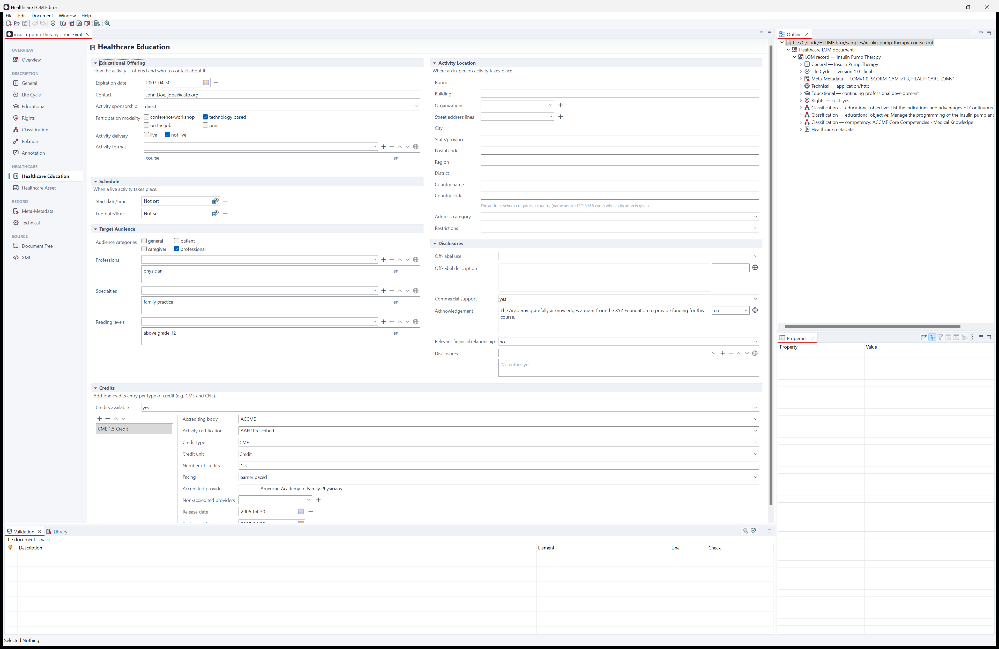

This walk-through creates a continuing-education record in Healthcare LOM, fills in the most important fields, checks it and saves it. It takes about ten minutes. Documents of the other MedBiquitous standards are created and edited the same way; see Documents of the other standards at the end.
New documents now list you in Life Cycle (author) and Meta-Metadata (creator).
A project keeps related records together and validates them in the background.
Documents\Hermes Projects), choose whether new
documents are XML or JSON, and click Create.The project appears in the Projects view. See Creating and Opening Projects.
en-US) and the file name, and click Finish.The document opens in the editor. Every template is a complete, schema-valid record with placeholders such as “Author Name” for you to replace.
Use the navigation sidebar on the left of the editor to move between pages:

Press Ctrl+S. The document is written as XML (or JSON, for a .json file),
and the project's documents are validated again in the background; their problems appear in the
Problems view.
To experiment without risk, open a sample from the start page (Open sample…):
the Healthcare LOM samples are listed first, followed by a submenu of samples for each other standard. Samples are
copied to Documents\MedBiquitous Samples before they open.
To create a Curriculum Inventory, a competency framework, an activity report or a document of any other MedBiquitous standard, choose it as the Standard in the new-document wizard (or click its card under Start from a template on the start page). The document starts from the standard's template, which is already valid, and is saved as XML. Its editor has an Overview page, form pages that follow the structure of the standard, the Document Tree and the XML page; it is validated against the standard's schemas and rules like a Healthcare LOM record. Steps 1 and 4 of this walk-through (author, MeSH keywords, credits) and the quick fixes and completeness of step 5 apply to Healthcare LOM only.